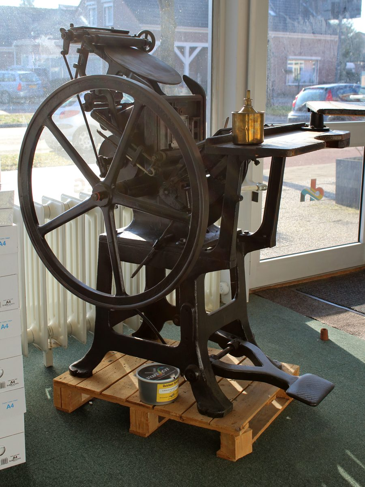

Waar het begon1961: begonnen met loden letters en een passie voor papier.
In 1961 opende Drukkerij Van den Herik haar deuren in 's-Gravendeel. Wat begon als een ambachtelijke drukkerij met handgezette letters en één pers, groeide uit tot de vertrouwde drukkerij van de Hoeksche Waard en ver daarbuiten.
De tijden zijn veranderd, maar één ding niet: de overtuiging dat goed drukwerk begint bij aandacht. Aandacht voor het papier, voor de kleur en vooral voor de mensen voor wie wij het maken.